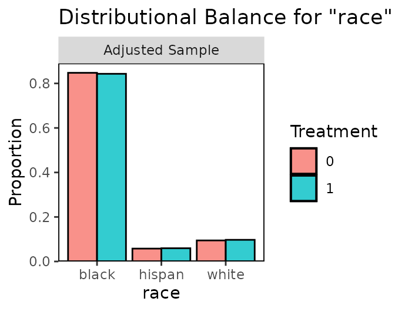
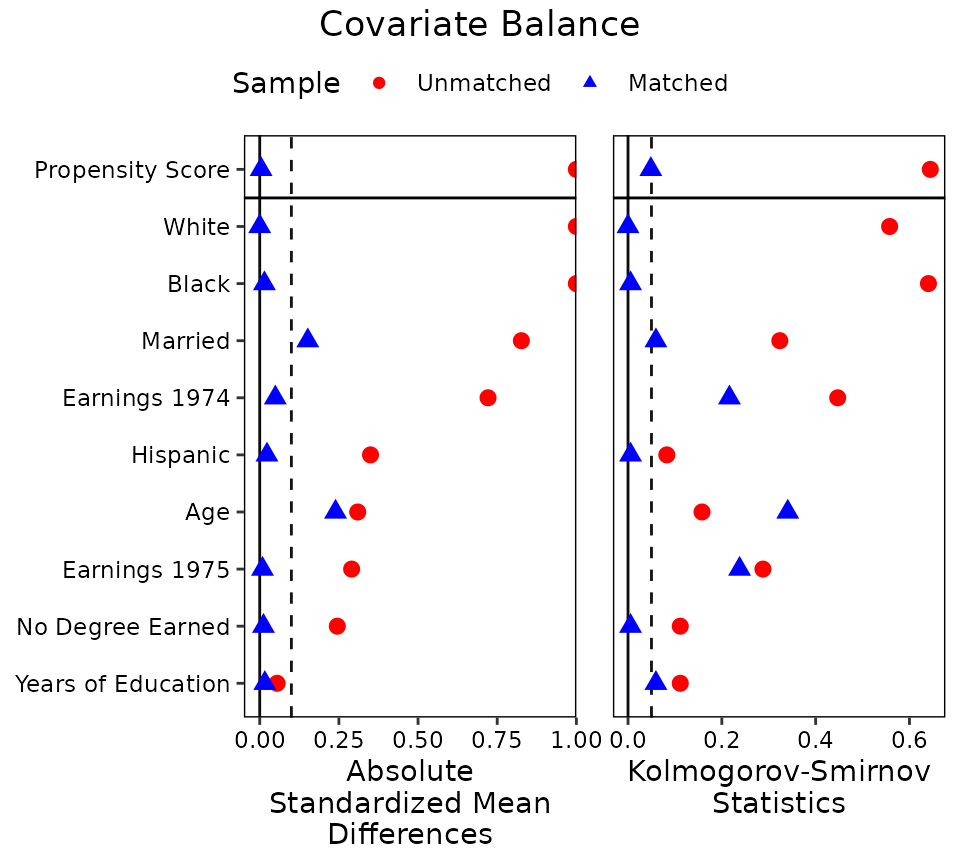
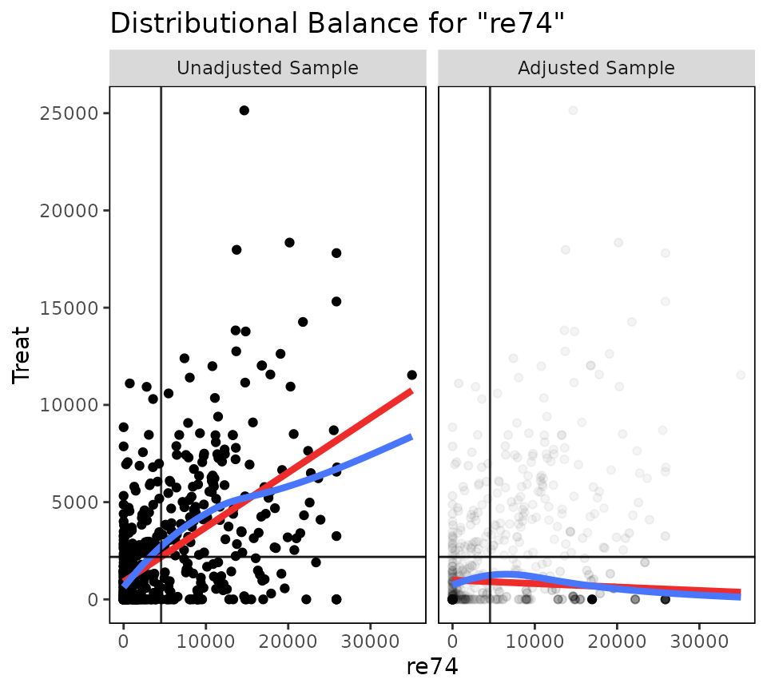
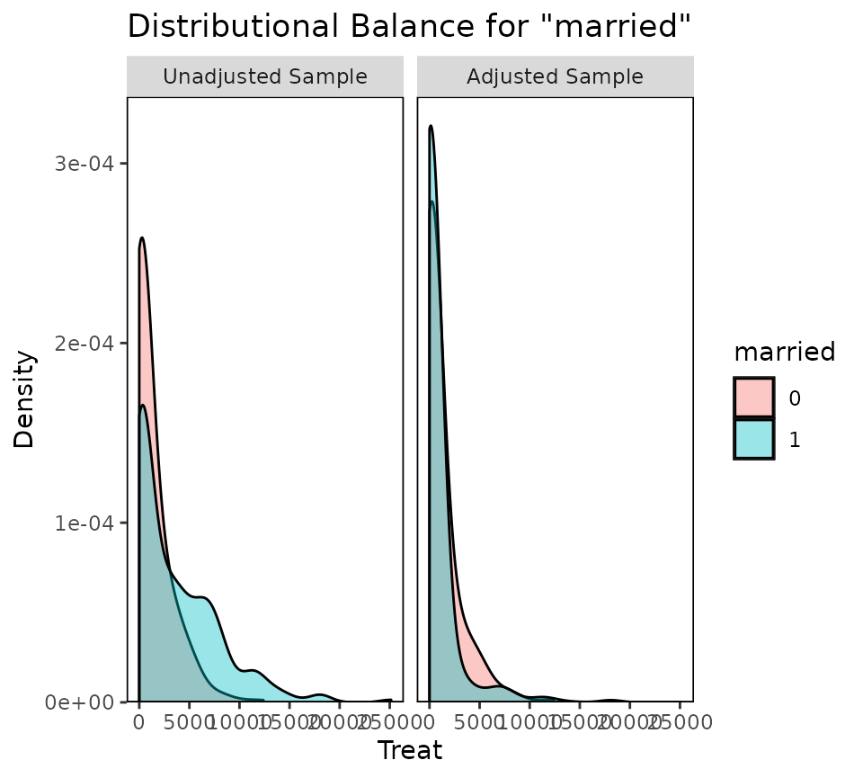
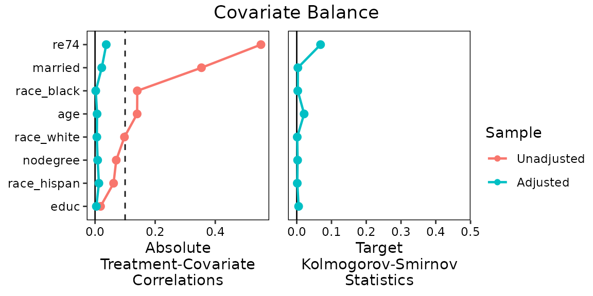
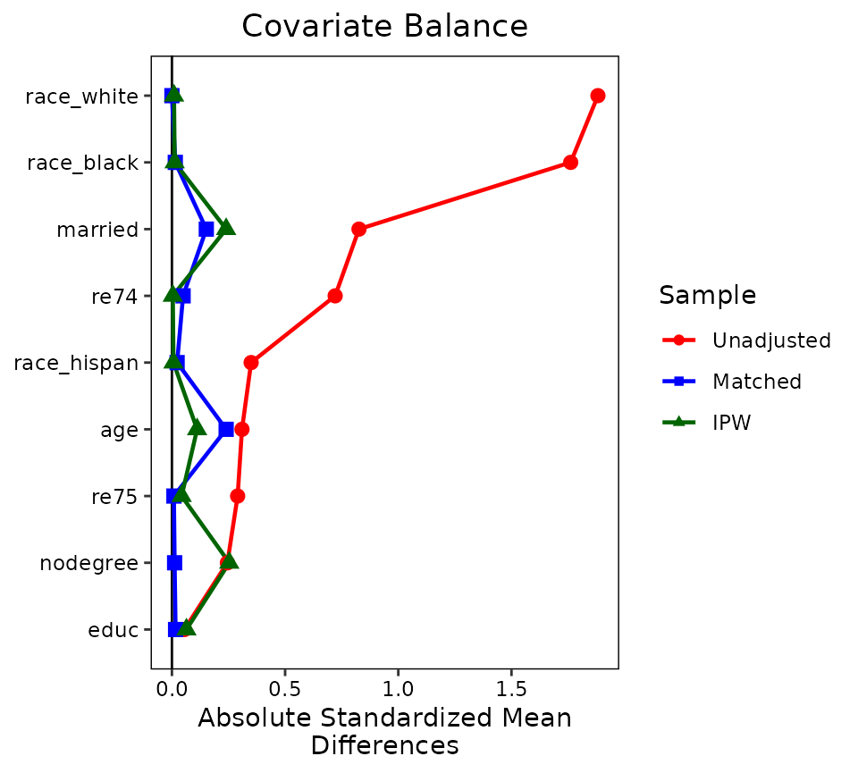

Covariate Balance Tables and Plots: A Guide to the `cobalt` Package
Noah Greifer
2023-04-26
Source:vignettes/cobalt.Rmd
cobalt.RmdThis is an introductory guide for the use of cobalt in
most common scenarios. Three appendices are available for its use with
more complicated data scenarios and packages not demonstrated here.1
Introduction
Preprocessing data through matching, weighting, or subclassification can be an effective way to reduce model dependence and improve efficiency when estimating the causal effect of a treatment (Ho et al. 2007). Propensity scores and other related methods (e.g., coarsened exact matching, Mahalanobis distance matching, genetic matching) have become popular in the social and health sciences as tools for this purpose. Two excellent introductions to propensity scores and other preprocessing methods are Stuart (2010) and Austin (2011), which describe them simply and clearly and point to other sources of knowledge. The logic and theory behind preprocessing will not be discussed here, and reader’s knowledge of the causal assumption of strong ignorability is assumed.
Several packages in R exist to perform preprocessing and causal
effect estimation, and some were reviewed by Keller and Tipton (2016). These include
MatchIt (Ho et al. 2011), twang
(Ridgeway et al. 2016),
Matching (Sekhon 2011), optmatch
(Hansen and Klopfer 2006),
CBPS (Fong et
al. 2019), ebal (Hainmueller 2014), sbw
(Zubizarreta, Li, and Kim 2021),
designmatch (Zubizarreta, Kilcioglu, and Vielma
2018), WeightIt (Greifer 2021), MatchThem
(Pishgar et al. 2021), and
cem (Iacus,
King, and Porro 2009); these together provide a near complete
set of preprocessing tools in R to date.
The following are the basic steps in performing a causal analysis using data preprocessing (Stuart 2010):
- Decide on covariates for which balance must be achieved
- Estimate the distance measure (e.g., propensity score)
- Condition on the distance measure (e.g., using matching, weighting, or subclassification)
- Assess balance on the covariates of interest; if poor, repeat steps 2-4
- Estimate the treatment effect in the conditioned sample
Steps 2, 3, and 4 are accomplished by all of the packages mentioned above. However, Step 4, assessing balance, is often overlooked in propensity score applications, with researchers failing to report the degree of covariate balance achieved by their conditioning (Thoemmes and Kim 2011). Achieving balance is the very purpose of preprocessing because covariate balance is what justifies ignorability on the observed covariates, allowing for the potential for a valid causal inference after effect estimation (Ho et al. 2007).
In addition to simply achieving balance, researchers must also report balance to convince readers that their analysis was performed adequately and that their causal conclusions are valid (Thoemmes and Kim 2011). Covariate balance is typically assessed and reported by using statistical measures, including standardized mean differences, variance ratios, and t-test or Kolmogorov-Smirnov-test p-values. Balance can be reported in an article by means of balance tables or plots displaying the balance measures before and after conditioning. If a defensible measure of balance is used and presented, readers are empowered to judge for themselves whether the causal claim made is valid or not based on the methods used and covariates chosen.
cobalt is meant to supplement or replace the balance
assessment tools in the above packages and allow researchers to assess
and report balance on covariates simply, clearly, and flexibly before
and after conditioning. It integrates seamlessly with the above packages
so that users can employ both the conditioning package of their choice
and cobalt in conjunction to assess and report balance. It
is important to note that cobalt does not replace the
highly sophisticated conditioning tools of these packages, as
it does no conditioning or estimation of its own.
The rest of this guide explains how to use cobalt with
some of the above packages and others, as well as the choices instituted
by the functions and customizable by the user. Other vignettes describe
the use of cobalt with packages not mentioned here, with
multiply imputed and clustered data, and with longitudinal
treatments.
Citing cobalt
When using cobalt, please cite your use of it along with
the conditioning package used. The full APA reference for
cobalt is the following:
Greifer, N. (2023). cobalt: Covariate Balance Tables and Plots. R package version 4.5.0.9001.
For example, if you use Matching for propensity score
estimation and matching and cobalt for balance assessment
and/or reporting, a possible citation might go as follows:
Matching was performed using the Matching package (Sekhon, 2011), and covariate balance was assessed using cobalt (Greifer, 2023), both in R (R Core Team, 2023).
Why cobalt?
If most of the major conditioning packages contain functions to
assess balance, why use cobalt at all? cobalt
arose out of several desiderata when using these packages: to have
standardized measures that were consistent across all conditioning
packages, to allow for flexibility in the calculation and display of
balance measures, and to incorporate recent methodological
recommendations in the assessment of balance. However, some users of
these packages may be completely satisfied with their capabilities and
comfortable with their output; for them, cobalt still has
value in its unique plotting capabilities that make use of
ggplot2 in R.
The following are some reasons why cobalt may be
attractive to users of MatchIt, twang,
Matching, optmatch, CBPS,
ebal, sbw, designmatch,
WeightIt, and other conditioning packages:
Visual clarity
cobalt presents one table in its balance output, and it
contains all the information required to assess balance.
twang and CBPS present two tables,
MatchIt presents three tables, and Matching
presents as many tables as there are covariates. Although each of these
tables contains valuable information, the bal.tab()
function in cobalt allows for a quick and easy search for
the information desired, which is often a single column containing a
balance statistic (such as the standardized mean difference) for the
adjusted sample.
Useful summaries
Although a thorough balance assessment requires examining the balance
of each covariate individually, cobalt’s
bal.tab() function can also produce quick balance summaries
that can aid in model selection when there are many covariates or higher
order terms to examine. These summaries include the proportion of
covariates that have met a user-specified threshold for balance and the
covariate with the highest degree of imbalance, two values that have
been shown to be effective in diagnosing imbalance and potential bias
(Stuart, Lee, and Leacy 2013).
One tool to rule them all
Because there is no a priori way to know which conditioning
method will work best for a given sample, users should try several
methods, and these methods are spread across various packages; for
example, full matching is available only in MatchIt and
optmatch, generalized boosted modeling only in
twang, covariate balancing propensity score weighting only
in CBPS, genetic matching only in MatchIt and
Matching, and entropy balancing only in ebal2. If a user
wants to compare these methods on their ability to generate balance in
the sample, they cannot do so on the same metrics and with the same
output. Each package computes balance statistics differently (if at
all), and the relevant balance measures are in different places in each
package. By using cobalt to assess balance across packages,
users can be sure they are using a single, equivalent balance metric
across methods, and the relevant balance statistics will be in the same
place and computed the same way regardless of the conditioning package
used.
Flexibility
cobalt gives users choice in which statistics are
presented and how they are calculated, but intelligently uses defaults
that are in line with the goals of unified balance assessment and with
the data available. Rather than displaying all values calculated,
bal.tab() only displays what the user wants; at a bare
minimum, the standardized mean difference for each covariate is
displayed, which is traditionally considered sufficient for model
selection and justification in preprocessing analysis for binary
treatments. Even if the user doesn’t want other values displayed, they
are all still calculated, and thus available for use in programming
(though this can be disabled for increased speed).
Pretty plots
The main conditioning packages produce plots that can be useful in
assessing balance, summarizing balance, and understanding the
intricacies of the conditioning method for which simple text would be
insufficient. Many of these plots are unique to each package, and
cobalt has not attempted to replace or replicate them. For
other plots, though, cobalt uses ggplot2 to
present clean, clear, customizable, and high-quality displays for
balance assessment and presentation. The two included plotting functions
are bal.plot(), which generates plots of the distributions
of covariates and treatment levels so that more complete distributional
balance can be assessed beyond numerical summaries, and
love.plot(), which generates a plot summarizing covariate
balance before and after conditioning, popularized by Dr. Thomas E.
Love. Because these plots use ggplot2 as their base, users
familiar with ggplot2 can customize various elements of the
plots for use in publications or presentations.
Unique features
There are unique features in cobalt that do not exist in
any other package. These include the handling of clustered and grouped
data and the handling of data generated with multiple imputation. These
more advanced uses of cobalt are described in detail in
vignette("segmented-data"). In addition,
cobalt includes tools for handling data sets with
continuous and multi-category treatments. Data sets with longitudinal
treatments, where time-varying confounding may be an issue, can be
handled as well; these uses are described in
vignette("longitudinal-treat").
How To Use cobalt
There are three main functions for use in cobalt:
bal.tab(), bal.plot(), and
love.plot(). There are also several utility functions which
can be used to ease the use of cobalt and other packages.
The next sections describe how to use each, complete with example code
and output. To start, install and load cobalt with the
following code:
install.packages("cobalt")
library("cobalt")Utilities
In addition to its main functions, cobalt contains
several utility functions, which include f.build(),
splitfactor() and unsplitfactor(),
get.w(), and bal.init() and
bal.compute(). These are meant to reduce the typing and
programming burden that often accompany the use of R with a diverse set
of packages. To simplify this vignette, descriptions of these functions
are in vignette("other-packages"). To understand the code
in this vignette, you should be aware of f.build(), which
creates a formula from its inputs, and get.w() which
extracts weights from its input.
bal.tab()
bal.tab() is the primary function of
cobalt. It produces balance tables for the objects given as
inputs. The balance tables can be customized with a variety of inputs,
which affect both calculation and presentation of values. It performs
similar functions to summary() in MatchIt;
bal.table(), summary(), and
dx.wts() in twang; MatchBalance()
and summary() in Matching;
balance() in CBPS; and
summarize() in sbw. It can be seen as a
replacement or a supplement to these functions.
For more help using bal.tab(), see ?bal.tab
in R, which contains information on how certain values are calculated
and links to the help files for the bal.tab() methods that
integrate with the above packages.
For simplicity, the description of the use of bal.tab()
will be most complete in its use without any other package. The
demonstration will display bal.tab()’s many options,
several of which differ based on with which package, if any,
bal.tab() is used. The other demonstrations will be
minimal, highlighting how to use bal.tab() effectively with
MatchIt and WeightIt, but not detailing all
its possible options with these packages, to avoid redundancy. The use
of bal.tab() with other packages is described in
vignette("other-packages").
Using bal.tab() on its own
bal.tab() can take in any data set and set of weights,
subclasses, or matching strata and evaluate balance on them. This can be
useful if propensity score weights, subclasses, or matching strata were
generated outside of the supported packages, if balance assessment is
desired prior to adjustment, or if package output is adjusted in such a
way as to make it unusable with one of bal.tab()’s other
methods (e.g., if cases were manually removed or weights manually
changed). In twang, the function dx.wts()
performs a similar action by allowing for the balance assessment of
groups weighted not using twang functions, though it is
more limited in the types of data or conditioning strategies allowed.
Below is an example of the use of bal.tab() with ATT
weights generating using logistic regression for a weighting-by-the-odds
analysis:
data("lalonde", package = "cobalt") #If not yet loaded
covs <- subset(lalonde, select = -c(treat, re78, nodegree, married))
# Generating ATT weights as specified in Austin (2011)
lalonde$p.score <- glm(treat ~ age + educ + race + re74 + re75,
data = lalonde,
family = "binomial")$fitted.values
lalonde$att.weights <- with(lalonde, treat + (1-treat)*p.score/(1-p.score))
bal.tab(covs, treat = lalonde$treat, weights = lalonde$att.weights)## Balance Measures
## Type Diff.Adj
## age Contin. 0.1112
## educ Contin. -0.0641
## race_black Binary -0.0044
## race_hispan Binary 0.0016
## race_white Binary 0.0028
## re74 Contin. -0.0039
## re75 Contin. -0.0428
##
## Effective sample sizes
## Control Treated
## Unadjusted 429. 185
## Adjusted 108.2 185Displayed first is the balance table, and last is a summary of sample
size information. Because weighting was specified as the method used,
effective sample sizes are given. See ?bal.tab, or “Details
on Calculations” below for details on this calculation.
There are several ways to specify input to bal.tab()
when using data outside a conditioning package. The first, as shown
above, is to use a data frame of covariates and vectors for treatment
status and weights or subclasses. The user can additionally specify a
vector of distance measures (e.g., propensity scores) if balance is to
be assessed on those as well. If weights is left empty,
balance on the unadjusted sample will be reported. The user can also
optionally specify a data set to the data argument; this
makes it so that the arguments to treat,
weights, distance, subclass, and
others can be specified either with a vector or with the name of a
variable in the argument to data that contains the
respective values.
Another way to specify input to bal.tab() is to use the
formula interface. Below is an example of its use:
bal.tab(treat ~ covs, data = lalonde,
weights = "att.weights",
distance = "p.score")## Balance Measures
## Type Diff.Adj
## p.score Distance -0.0397
## age Contin. 0.1112
## educ Contin. -0.0641
## race_black Binary -0.0044
## race_hispan Binary 0.0016
## race_white Binary 0.0028
## re74 Contin. -0.0039
## re75 Contin. -0.0428
##
## Effective sample sizes
## Control Treated
## Unadjusted 429. 185
## Adjusted 108.2 185To use the formula interface, the user must specify a formula
relating treatment to the covariates for which balance is to be
assessed. If any of these variables exist in a data set, it must be
supplied to data. Here, the covs data frame
was used for simplicity, but using f.build() or the
traditional formula input of treat ~ v1 + v2 + v3 + ... is
also acceptable. As above, the arguments to weights,
distance, subclass, and others can be
specified either as vectors or data frames containing the values or as
names of the variables in the argument to data containing
the values. In the above example, an argument to distance
was specified, and balance measures for the propensity score now appear
in the balance table.
By default, bal.tab() outputs standardized mean
differences for continuous variables and raw differences in proportion
for binary variables. For more details on how these values are computed
and determined, see ?bal.tab or “Details on Calculations”
below. To see raw or standardized mean differences for binary or
continuous variables, you can manually set binary and/or
continuous to "raw" or "std".
These can also be set as global options by using, for example,
set.cobalt.options(binary = "std"), which allows the user
not to type a non-default option every time they call
bal.tab.
bal.tab(treat ~ covs, data = lalonde,
weights = "att.weights",
binary = "std", continuous = "std")## Balance Measures
## Type Diff.Adj
## age Contin. 0.1112
## educ Contin. -0.0641
## race_black Binary -0.0120
## race_hispan Binary 0.0068
## race_white Binary 0.0093
## re74 Contin. -0.0039
## re75 Contin. -0.0428
##
## Effective sample sizes
## Control Treated
## Unadjusted 429. 185
## Adjusted 108.2 185Users can specify additional variables for which to display balance
using the argument to addl, which can be supplied as a
data.frame, a formula containing variables, or a string of names of
variables. Users can also add all two-way interactions between
covariates, including those in addl, by specifying
int = TRUE, and can add polynomials (e.g., squares) of
covariates by specifying a numeric argument to poly.
Interactions will not be computed for the distance measure (i.e., the
propensity score), and squared terms will not be computed for binary
variables. For more details on interactions, see “Details on
Calculations”, below. To only request a few desired interaction terms,
these can be entered into addl using a formula, as in
addl = ~ V1 * V2. Below, balance is requested on the
variables stored in covs, the additional variables
nodegree and married, and their interactions
and squares.
# Balance on all covariates in data set, including interactions and squares
bal.tab(treat ~ covs, data = lalonde,
weights = "att.weights",
addl = ~ nodegree + married,
int = TRUE, poly = 2)## Balance Measures
## Type Diff.Adj
## age Contin. 0.1112
## educ Contin. -0.0641
## race_black Binary -0.0044
## race_hispan Binary 0.0016
## race_white Binary 0.0028
## re74 Contin. -0.0039
## re75 Contin. -0.0428
## nodegree Binary 0.1151
## married Binary -0.0938
## age² Contin. -0.0194
## educ² Contin. -0.1353
## re74² Contin. 0.0675
## re75² Contin. 0.0196
## age * educ Contin. 0.0950
## age * race_black Contin. 0.0741
## age * race_hispan Contin. -0.0096
## age * race_white Contin. -0.0013
## age * re74 Contin. -0.0498
## age * re75 Contin. -0.0144
## age * nodegree_0 Contin. -0.1950
## age * nodegree_1 Contin. 0.2507
## age * married_0 Contin. 0.3612
## age * married_1 Contin. -0.2843
## educ * race_black Contin. -0.0441
## educ * race_hispan Contin. 0.0122
## educ * race_white Contin. 0.0085
## educ * re74 Contin. -0.0149
## educ * re75 Contin. -0.0834
## educ * nodegree_0 Contin. -0.2655
## educ * nodegree_1 Contin. 0.3051
## educ * married_0 Contin. 0.2016
## educ * married_1 Contin. -0.2453
## race_black * re74 Contin. 0.0477
## race_black * re75 Contin. -0.0297
## race_black * nodegree_0 Binary -0.1110
## race_black * nodegree_1 Binary 0.1067
## race_black * married_0 Binary 0.0535
## race_black * married_1 Binary -0.0579
## race_hispan * re74 Contin. -0.0129
## race_hispan * re75 Contin. 0.0258
## race_hispan * nodegree_0 Binary -0.0068
## race_hispan * nodegree_1 Binary 0.0084
## race_hispan * married_0 Binary 0.0076
## race_hispan * married_1 Binary -0.0060
## race_white * re74 Contin. -0.2488
## race_white * re75 Contin. -0.0926
## race_white * nodegree_0 Binary 0.0027
## race_white * nodegree_1 Binary 0.0001
## race_white * married_0 Binary 0.0327
## race_white * married_1 Binary -0.0300
## re74 * re75 Contin. 0.0636
## re74 * nodegree_0 Contin. -0.0464
## re74 * nodegree_1 Contin. 0.0467
## re74 * married_0 Contin. 0.1108
## re74 * married_1 Contin. -0.1122
## re75 * nodegree_0 Contin. -0.3656
## re75 * nodegree_1 Contin. 0.1487
## re75 * married_0 Contin. 0.1093
## re75 * married_1 Contin. -0.1177
## nodegree_0 * married_0 Binary -0.0134
## nodegree_0 * married_1 Binary -0.1017
## nodegree_1 * married_0 Binary 0.1072
## nodegree_1 * married_1 Binary 0.0079
##
## Effective sample sizes
## Control Treated
## Unadjusted 429. 185
## Adjusted 108.2 185Standardized mean differences can be computed several ways, and the
user can decide how bal.tab() does so using the argument to
s.d.denom, which controls whether the measure of spread in
the denominator is the standard deviation of the treated group
("treated"), most appropriate when computing the ATT; the
standard deviation of the control group ("control"), most
appropriate when computing the ATC; the pooled standard deviation
("pooled"), computed as in Austin
(2009), most
appropriate when computing the ATE; or another value (see
?col_w_smd for more options). bal.tab() can
generally determine if the ATT or ATC are being estimated and will
supply s.d.denom accordingly. Otherwise, the default is
"pooled".
The next options only affect display, not the calculation of any
statistics. First is disp, which controls whether sample
statistics for each covariate in each group are displayed. Options
include "means" and "sds", which will request
group means and standard deviations, respectively3.
Next is stats, which controls which balance statistics
are displayed. For binary and multi-category treatments, options include
"mean.diffs" for (standardized) mean differences,
"variance.ratios" for variance ratios,
"ks.statistics" for Kolmogorov-Smirnov (KS) statistics, and
"ovl.coefficients" for the complement of the overlapping
coefficient (abbreviations are allowed). See
help("balance-statistics") for details. By default,
standardized mean differences are displayed. Variance ratios are another
important tool for assessing balance beyond mean differences because
they pertain to the shape of the covariate distributions beyond their
centers. Variance ratios close to 1 (i.e., equal variances in both
groups) are indicative of group balance (Austin 2009). KS
statistics measure the greatest distance between the empirical
cumulative distribution functions (eCDFs) for each variable between two
groups. The statistic is bounded at 0 and 1, with 0 indicting perfectly
identical distributions and 1 indicating perfect separation between the
distributions (i.e., no overlap at all); values close to 0 are thus
indicative of balance. The use of the KS statistic to formally assess
balance is debated. Austin and Stuart (2015) recommend its use, and it or a
variant appears as a default balance statistic in MatchIt,
twang, and Matching. On the other hand, Belitser et al. (2011), Stuart,
Lee, and Leacy (2013), and Ali et
al. (2014) all found that global balance
assessments using the KS statistic performed uniformly worse than
standardized mean differences, especially at sample sizes less than 1000
in their simulations. The overlapping coefficient measures the amount of
overlap in the covariate distributions between two groups. As in Franklin et al. (2014), the complement is used so that 0
indicates perfectly overlapping distributions and 1 indicates perfectly
non-overlapping distributions. The overlapping coefficient complement
functions similarly to the KS statistic in that it summarizes imbalance
across the whole distribution of the covariate, not just its mean or
variance, but avoids some of the weaknesses of the KS statistic.
Next is un, which controls whether the statistics to be
displayed should be displayed for the unadjusted group as well. This can
be useful the first time balance is assessed to see the initial group
imbalance. Setting un = FALSE, which is the default, can
de-clutter the output to maintain the spotlight on the group balance
after adjustment.
# Balance tables with mean differences, variance ratios, and
# statistics for the unadjusted sample
bal.tab(treat ~ covs, data = lalonde,
weights = "att.weights",
disp = c("means", "sds"), un = TRUE,
stats = c("mean.diffs", "variance.ratios"))## Balance Measures
## Type M.0.Un SD.0.Un M.1.Un SD.1.Un Diff.Un V.Ratio.Un
## age Contin. 28.0303 10.7867 25.8162 7.1550 -0.3094 0.4400
## educ Contin. 10.2354 2.8552 10.3459 2.0107 0.0550 0.4959
## race_black Binary 0.2028 . 0.8432 . 0.6404 .
## race_hispan Binary 0.1422 . 0.0595 . -0.0827 .
## race_white Binary 0.6550 . 0.0973 . -0.5577 .
## re74 Contin. 5619.2365 6788.7508 2095.5737 4886.6204 -0.7211 0.5181
## re75 Contin. 2466.4844 3291.9962 1532.0553 3219.2509 -0.2903 0.9563
## M.0.Adj SD.0.Adj M.1.Adj SD.1.Adj Diff.Adj V.Ratio.Adj
## age 25.0205 10.0330 25.8162 7.1550 0.1112 0.5086
## educ 10.4748 2.5918 10.3459 2.0107 -0.0641 0.6018
## race_black 0.8476 . 0.8432 . -0.0044 .
## race_hispan 0.0578 . 0.0595 . 0.0016 .
## race_white 0.0945 . 0.0973 . 0.0028 .
## re74 2114.5263 4013.9557 2095.5737 4886.6204 -0.0039 1.4821
## re75 1669.9618 2974.6678 1532.0553 3219.2509 -0.0428 1.1712
##
## Effective sample sizes
## Control Treated
## Unadjusted 429. 185
## Adjusted 108.2 185See ?display_options for the full list of display
options. They can also be set as global options by using
set.cobalt.options().
Finally, the user can specify a threshold for balance statistics
using the threshold argument. Thresholds can be useful in
determining whether satisfactory balance has been achieved. For
standardized mean differences, thresholds of .1 and .25 have been
proposed, but Stuart, Lee, and Leacy (2013) found that a threshold of .1 was
more effective at assessing imbalance that would lead to biased effect
estimation. In general, standardized mean differences should be as close
to 0 as possible, but a conservative upper limit such as .1 can be a
valuable heuristic in selecting models and defending the conditioning
choice. The What Works Clearinghouse Standards Handbook recommends
standardized mean differences of less than .05 (What Works
Clearinghouse, 2020).
When thresholds are requested, a few components are added to the
balance output: an extra column in the balance table stating whether
each covariate is or is not balanced according to the threshold, an
extra table below the balance table with a tally of how many covariates
are or are not balanced according to the threshold, and a notice of
which covariate has the greatest imbalance after conditioning and
whether it exceeded the threshold. Below, thresholds are requested for
mean differences (m) and variance ratios
(v).
# Balance tables with thresholds for mean differences and variance ratios
bal.tab(treat ~ covs, data = lalonde,
weights = "att.weights",
thresholds = c(m = .1, v = 2))## Balance Measures
## Type Diff.Adj M.Threshold V.Ratio.Adj V.Threshold
## age Contin. 0.1112 Not Balanced, >0.1 0.5086 Balanced, <2
## educ Contin. -0.0641 Balanced, <0.1 0.6018 Balanced, <2
## race_black Binary -0.0044 Balanced, <0.1 .
## race_hispan Binary 0.0016 Balanced, <0.1 .
## race_white Binary 0.0028 Balanced, <0.1 .
## re74 Contin. -0.0039 Balanced, <0.1 1.4821 Balanced, <2
## re75 Contin. -0.0428 Balanced, <0.1 1.1712 Balanced, <2
##
## Balance tally for mean differences
## count
## Balanced, <0.1 6
## Not Balanced, >0.1 1
##
## Variable with the greatest mean difference
## Variable Diff.Adj M.Threshold
## age 0.1112 Not Balanced, >0.1
##
## Balance tally for variance ratios
## count
## Balanced, <2 4
## Not Balanced, >2 0
##
## Variable with the greatest variance ratio
## Variable V.Ratio.Adj V.Threshold
## age 0.5086 Balanced, <2
##
## Effective sample sizes
## Control Treated
## Unadjusted 429. 185
## Adjusted 108.2 185To simplify output when many covariates are included or when
int = TRUE is specified, imbalanced.only can
be set to TRUE, which will only reveal imbalanced
covariates in the output. These are covariates that have failed to meet
any of the balance thresholds set. In addition,
disp.bal.tab can be set FALSE, which will hide
the balance table (revealing only the balance summaries accompanying the
threshold).
If sampling weights are used and are to be applied to both the
adjusted and unadjusted groups, they can be specified with an argument
to s.weights, which can be specified either by providing a
vector of sampling weights for each unit or by providing the name of a
variable in data containing the sampling weights. The
adjusted and unadjusted samples will each be weighted by the sampling
weights by multiplying the adjustment weights (if any) by the sampling
weights.
It is possible to view balance for more than one set of weights at a
time. The input to weights should be either the names of
variables in data containing the desired weights or a named
data frame containing each set of weights. The arguments to
s.d.denom or estimand must have the same
length as the number of sets of weights, or else be of length 1,
applying the sole input to all sets of weights. Below is an example
comparing the weights estimated above to a new set of weights. Another
example can be found in the section “Comparing Balancing Methods”.
# Generating ATT weights with different covariates
lalonde$p.score2 <- glm(treat ~ age + I(age^2) + race + educ + re74,
data = lalonde,
family = "binomial")$fitted.values
lalonde$att.weights2 <- with(lalonde, treat + (1-treat)*p.score2/(1-p.score2))
bal.tab(treat ~ covs, data = lalonde,
weights = c("att.weights", "att.weights2"),
estimand = "ATT")## Balance Measures
## Type Diff.att.weights Diff.att.weights2
## age Contin. 0.1112 -0.0400
## educ Contin. -0.0641 -0.0227
## race_black Binary -0.0044 -0.0005
## race_hispan Binary 0.0016 -0.0010
## race_white Binary 0.0028 0.0015
## re74 Contin. -0.0039 0.0037
## re75 Contin. -0.0428 -0.0083
##
## Effective sample sizes
## Control Treated
## All 429. 185
## att.weights 108.2 185
## att.weights2 72.04 185When subclassification is used in conditioning, an argument to
subclass must be specified; this can be a vector of
subclass membership or the name of a variable in data
containing subclass membership. bal.tab() produces a
different type of output from when matching or weighting are used,
though it has all of the same features. The default output is a balance
table displaying balance aggregated across subclasses; this can be
controlled with the subclass.summary options. Each cell
contains the average statistic across the subclasses. Using the
arguments discussed above will change the output as it does when only
matching or weighting is used.
To examine balance within each subclass, the user can specify
which.subclass = .all, which will produce output for the
subclasses in aggregate. Within subclasses, all the information above,
including other requested statistics, will be presented, except for
statistics for the unadjusted groups (since the adjustment occurs by
creating the subclasses), as specified by the user. See
?bal.tab.subclass for more details.
# Subclassification for ATT with 5 subclasses
lalonde$p.score <- glm(treat ~ age + educ + race + re74 + re75,
data = lalonde,
family = "binomial")$fitted.values
nsub <- 5 #number of subclasses
lalonde$subclass <- with(lalonde,
findInterval(p.score,
quantile(p.score[treat == 1],
seq(0, 1, length.out = nsub + 1)),
all.inside = TRUE))
bal.tab(treat ~ covs, data = lalonde,
subclass = "subclass",
which.subclass = .all,
subclass.summary = TRUE)## Balance by subclass
## - - - Subclass 1 - - -
## Type Diff.Adj
## age Contin. -0.4889
## educ Contin. 0.1324
## race_black Binary 0.1934
## race_hispan Binary 0.1230
## race_white Binary -0.3164
## re74 Contin. -0.2334
## re75 Contin. -0.0435
##
## - - - Subclass 2 - - -
## Type Diff.Adj
## age Contin. -0.4423
## educ Contin. 0.3102
## race_black Binary 0.0000
## race_hispan Binary 0.0000
## race_white Binary 0.0000
## re74 Contin. 0.0584
## re75 Contin. 0.3445
##
## - - - Subclass 3 - - -
## Type Diff.Adj
## age Contin. 0.4968
## educ Contin. -0.1031
## race_black Binary 0.0000
## race_hispan Binary 0.0000
## race_white Binary 0.0000
## re74 Contin. -0.1250
## re75 Contin. -0.1912
##
## - - - Subclass 4 - - -
## Type Diff.Adj
## age Contin. 0.2665
## educ Contin. -0.1616
## race_black Binary 0.0000
## race_hispan Binary 0.0000
## race_white Binary 0.0000
## re74 Contin. -0.1082
## re75 Contin. -0.0307
##
## - - - Subclass 5 - - -
## Type Diff.Adj
## age Contin. 0.2946
## educ Contin. -0.0757
## race_black Binary 0.0000
## race_hispan Binary 0.0000
## race_white Binary 0.0000
## re74 Contin. -0.0546
## re75 Contin. -0.1770
##
## Balance measures across subclasses
## Type Diff.Adj
## age Contin. 0.0216
## educ Contin. 0.0195
## race_black Binary 0.0387
## race_hispan Binary 0.0246
## race_white Binary -0.0633
## re74 Contin. -0.0923
## re75 Contin. -0.0170
##
## Sample sizes by subclass
## 1 2 3 4 5 All
## Control 350 25 21 14 19 429
## Treated 37 37 34 40 37 185
## Total 387 62 55 54 56 614When using bal.tab() with continuous treatments, the
default balance statistic presented is the (weighted) Pearson
correlation between each covariate and treatment. Zhu, Coffman, and Ghosh (2015) recommend that absolute
correlations should be no greater than 0.1, but correlations should
ideally be as close to zero as possible. Spearman correlations can also
be requested. See the section “Using cobalt with continuous
treatments” and ?balance.stats for more details.
The next two sections describe the use of bal.tab() with
the MatchIt and WeightIt. As stated above, the
arguments controlling calculations and display are largely the same
across inputs types, so they will not be described again except when
their use differs from that described in the present section.
Using bal.tab() with MatchIt
When using bal.tab() with MatchIt, fewer
arguments need to be specified because information is stored in the
matchit object, the output of a call to
matchit(). bal.tab() is used very similarly to
summary() in MatchIt: it takes in a
matchit object as its input, and prints a balance table
with the requested information. Below is a simple example of its
use:
data("lalonde", package = "cobalt")
# Nearest neighbor 2:1 matching with replacement
m.out <- MatchIt::matchit(treat ~ age + educ + race + re74 + re75,
data = lalonde, method = "nearest",
ratio = 1, replace = TRUE)
bal.tab(m.out)## Balance Measures
## Type Diff.Adj
## distance Distance 0.0145
## age Contin. -0.3173
## educ Contin. 0.0108
## race_black Binary 0.0108
## race_hispan Binary -0.0162
## race_white Binary 0.0054
## re74 Contin. 0.0418
## re75 Contin. 0.1145
##
## Sample sizes
## Control Treated
## All 429. 185
## Matched (ESS) 28.5 185
## Matched (Unweighted) 78. 185
## Unmatched 351. 0The output looks very similar to MatchIt’s
summary() function: first is the balance table, and second
is a summary of the sample size before and after adjustment.
Setting binary = "std" in bal.tab() will
produce identical calculations to those in MatchIt’s
summary(m.out, standardize = TRUE), which produces
standardized differences for binary variables as well as continuous
variables. The other arguments to bal.tab() when using it
with MatchIt have the same form and function as those given
when using it without a conditioning package. The output when using
MatchIt for subclassification is the same as that displayed
previously.
Using bal.tab() with WeightIt
The WeightIt package is a convenient wrapper for the
weighting functions of several packages, including twang,
CBPS, ebal, sbw, and
ATE, and allows for the estimation of weights for binary,
multi-category, and categorical treatments and both point and
longitudinal treatments. It was designed to work seamlessly with
cobalt, so using it with cobalt is very
straightforward. Below is a simple example of using
bal.tab() with WeightIt:
data("lalonde", package = "cobalt") #If not yet loaded
#Generating propensity score weights for the ATT
W.out <- WeightIt::weightit(treat ~ age + educ + race + re74 + re75,
data = lalonde,
method = "glm",
estimand = "ATT")
bal.tab(W.out)## Balance Measures
## Type Diff.Adj
## prop.score Distance -0.0397
## age Contin. 0.1112
## educ Contin. -0.0641
## race_black Binary -0.0044
## race_hispan Binary 0.0016
## race_white Binary 0.0028
## re74 Contin. -0.0039
## re75 Contin. -0.0428
##
## Effective sample sizes
## Control Treated
## Unadjusted 429. 185
## Adjusted 108.2 185
bal.plot()
The gold standard for covariate balance is multidimensional
independence between treatment and covariates. Because this is hard to
visualize and assess with the large numbers of covariates typical of
causal effect analysis, univariate balance is typically assessed as a
proxy. Most conditioning packages, as well as cobalt, will
provide numerical summaries of balance, typically by comparing moments
between the treated and control groups. But even univariate balance is
more complicated than simple numerical summaries can address; examining
distributional balance is a more thorough method to assess balance
between groups. Although there are statistics such as the
Kolmogorov-Smirnov statistic and the overlapping coefficient complement
that attempt to summarize distributional balance beyond the first few
moments (Austin and
Stuart 2015; Ali et al. 2015), complimenting
statistics with a visual examination of the distributional densities can
be an effective way of assessing distributional similarity between the
groups (Ho et al. 2007).
bal.plot() allows users to do so by displaying density
plots, histograms, empirical CDF plots, bar graphs, and scatterplots so
that users can visually assess independence between treatment and
covariates before and after conditioning. Below is an example of the use
of bal.plot() after using propensity score weighting for
the ATT using the output from WeightIt generated
above.:

The first argument (or set of arguments) is the sufficient set of
arguments for a simple call to bal.tab(), defining the data
object (e.g., the output of a conditioning function), the treatment
indicators, and the weights or subclasses. See above for examples. The
next argument is the name of the covariate for which distributional
balance is to be assessed. If subclassification is used (i.e., if
subclasses are present in the input data object or arguments), an
additional argument which.sub can be specified, with a
number corresponding to the subclass number for which balance is to be
assessed on the specified covariate; if it is not specified, plots for
all subclasses will be displayed.
The user can also specify whether distributional balance is to be
shown before or after adjusting or both by using the argument to
which. If which = "unadjusted", balance will
be displayed for the unadjusted sample only. If
which = "both", balance will be displayed for both the
unadjusted sample and the adjusted sample. The default is to display
balance for the adjusted sample.
The output of bal.plot() is a density plot, histogram,
or empirical CDF plot for the two groups on the given covariate,
depending on the argument to type. For categorical or
binary variables, a bar graph is displayed instead. When multi-category
categorical variables are given, bars will be created for each level,
unlike in bal.tab(), which splits the variable into several
binary variables. The degree to which the densities for the two groups
overlap is a good measure of group balance on the given covariate;
significant differences in shape can be indicative of poor balance, even
when the mean differences and variance ratios are well within
thresholds. Strong distributional similarity is especially important for
variables strongly related to the outcome of interest.
Distributional balance can also be assessed on the distance measure,
and this can form an alternative to other common support checks, like
MatchIt’s plot(..., type = "hist") or
twang’s plot(..., plots = "boxplot"). To
examine the distributions of the distance measure, the input to
var.name must be the name of the distance variable. If the
data input object doesn’t already contain the distance measure (e.g., if
not using one of the conditioning packages), the distance measure must
be manually added as an input to bal.plot() through
distance, in addition to being called through
var.name.
Below is an example using bal.plot() to display the
distributions of propensity scores before and after weighting
adjustment:
#Before and after weighting; which = "both"
bal.plot(W.out, var.name = "prop.score",
which = "both",
type = "histogram",
mirror = TRUE)
Setting type = "histogram" produces a histogram rather
than a density plot, and setting mirror = TRUE creates a
mirrored plot rather than overlapping histograms. Mirroring only works
with binary treatments.
It is generally not a useful assessment of balance to examine the overlap of the distance measure distributions after adjustment, as most conditioning methods will yield good distributional overlap on the distance measure whether or not balance is achieved on the covariates (Stuart, Lee, and Leacy 2013). However, it may be useful to see the new range of the distance measure if calipers or common support pruning are used.
The output plot is made using ggplot2, which means that
users familiar with ggplot2 can adjust the plot with
ggplot2 commands.
When the treatment variable is continuous, users can use
bal.plot() to examine and assess dependence between the
covariate and treatment. The arguments given to bal.plot()
are the same as in the binary treatment case, but the resulting plots
are different. If the covariate is continuous, a scatterplot between the
covariate and the treatment variable will be displayed, along with a
linear fit line, a Loess curve, and a reference line indicating linear
independence. Used together, these lines can help diagnose departures
from independence beyond the simple correlation coefficient. Proximity
of the fit lines to the reference line is suggestive of independence
between the covariate and treatment variable. If the covariate is
categorical (including binary), density plots of the treatment variable
for each category will be displayed. Densities that overlap completely
are indicative of independence between the covariate and treatment. See
the section “Using cobalt with continuous treatments” for more details
and an example.
love.plot()
The Love plot is a summary plot of covariate balance before and after
conditioning popularized by Dr. Thomas E. Love. In a visually appealing
and clear way, balance can be presented to demonstrate to readers that
balance has been met within a threshold, and that balance has improved
after conditioning [which is not always the case; cf. King and Nielsen (2019)]. love.plot() does
just this, providing the user with several options to customize their
plot for presentation. Below is an example of its use:
data("lalonde", package = "cobalt")
# Nearest neighbor 1:1 matching with replacement
m.out <- MatchIt::matchit(treat ~ age + educ + married + race +
nodegree + re74 + re75,
data = lalonde,
method = "nearest",
replace = TRUE)
love.plot(m.out, binary = "std", thresholds = c(m = .1))
love.plot() takes as its arguments the same ones that
would go into a call to bal.tab(). In addition, it can take
as its first argument the output of a call to bal.tab();
this can be accomplished simply by inserting the bal.tab()
call into the first argument or by saving the result of a call to
bal.tab() to an object and inserting the object as the
argument. There are several other arguments, all of which control
display, that are described below.
The output is a plot with the balance statistic on the X-axis and the
covariates output in bal.tab() on the Y-axis. Each point
represents the balance statistic for that covariate, colored based on
whether it is calculated before or after adjustment. The dotted lines
represent the threshold set in the threshold argument; if
most or all of the points after adjustment are within the threshold,
that is good evidence that balance has been achieved.
The default is to present the absolute mean differences as they are
calculated in the call to bal.tab(); by specifying
stats = "variance.ratios" or
stats = "ks.statistics" (abbreviations allowed), the user
can request variance ratios or KS statistics instead or in addition.
Because binary variables don’t have variance ratios calculated, there
will not be rows for these variables, but these rows can be added (with
empty entries) to be in alignment with mean differences by setting
drop.missing = FALSE.
The thresholds argument works similarly to how it does
in bal.tab(); specifying it is optional, but doing so will
provide an additional point of reference on which to evaluate the
displayed balance measures.
If mean difference are requested, love.plot() will use
the mean differences as they are calculated by bal.tab()
and presented in the mean differences columns of the balance table. See
the section on using bal.tab() to see what the default
calculations are for these values. If abs = TRUE in
love.plot(), the plot will display absolute mean
differences, which can aid in display clarity since the magnitude is
generally the more important aspect of the statistic.
The order of the covariates displayed can be adjusted using the
argument to var.order. If left empty or NULL,
the covariates will be listed in the order of the original dataset. If
"adjusted", covariates will be ordered by the requested
balance statistic of the adjusted sample. If "unadjusted",
covariates will be ordered by the requested balance statistic of the
unadjusted sample, which tends to be more visually appealing.
Abbreviations are allowed. The distance variable(s), if any, will always
be displayed at the top. They can be omitted by setting
drop.distance = TRUE.
The plot uses the original variable names as they are given in the
data set, which may not be the names desired for display in publication.
By using the argument to var.names, users can specify their
own variable names to be used instead. To specify new variable names
with var.names, the user must enter an object containing
the new variable names and, optionally, the old variable names to
replace. For options of how to do so, see the help file for
love.plot() with ?love.plot. Below is an
example, creating a publication-ready plot with a few other arguments to
customize output:
v <- data.frame(old = c("age", "educ", "race_black", "race_hispan",
"race_white", "married", "nodegree", "re74", "re75", "distance"),
new = c("Age", "Years of Education", "Black",
"Hispanic", "White", "Married", "No Degree Earned",
"Earnings 1974", "Earnings 1975", "Propensity Score"))
love.plot(m.out, stats = c("mean.diffs", "ks.statistics"),
threshold = c(m = .1, ks = .05),
binary = "std",
abs = TRUE,
var.order = "unadjusted",
var.names = v,
limits = c(0, 1),
grid = FALSE,
wrap = 20,
sample.names = c("Unmatched", "Matched"),
position = "top",
shapes = c("circle", "triangle"),
colors = c("red", "blue"))
This plot shows that balance was improved on almost all variables after adjustment, bringing all but two below the threshold of .1 for absolute mean differences.
A helper function, var.names() can be used to more
easily create new variable names when many variables are present. See
?var.names for details.
When the treatment variable is continuous, love.plot()
will display Pearson correlations between each covariate and treatment.
The same arguments apply except that stats is ignored and
threshold corresponds to r.threshold, the
threshold for correlations.
Like the output of bal.plot(), the output of
love.plot() is a ggplot2 object, which means
ggplot2 users can modify the plot to some extent for
presentation or publication. Several aspects of the appearance of the
plot can be customized using the love.plot() syntax,
including the size, shape, and color of the points, the title of the
plot, whether to display grid lines, and whether to display lines
connecting the points. See ?love.plot for details. It may
be challenging to make adjustments to these aspects using
ggplot2 syntax, so these arguments allow for some simple
adjustments. See vignette("love.plot") for information on
more of love.plot()’s features.
Additional Features
Using cobalt with continuous treatments
Although the most common use of propensity scores is in the context of binary treatments, it is also possible to use propensity scores with continuous treatment to estimate dose-response functions while controlling for background variables (Hirano and Imbens 2005). As in the binary case, the goal of propensity score adjustment in the continuous case is to arrive at a scenario in which, conditional on the propensity score, treatment is independent of background covariates. When this is true (and there are no unmeasured confounders), treatment is also independent of potential outcomes, thereby meeting the strong ignorability requirement for causal inference.
Bia and Mattei (2008) describe the use of the
gpscore function in Stata, which appears to be effective
for estimating and assessing dose-response functions for continuous
treatments. In R, there are not many ways to estimate and condition on
the propensity score in these contexts. It is possible, using the
formulas described by Hirano and Imbens (2005), to generate the propensity scores
manually and perform weighting, subclassification, or covariate
adjustment on them. The WeightIt package supports
continuous treatments with a variety of options, including the CBPS
method implemented in the CBPS package and described by
Fong, Hazlett, and Imai (2018), GBM as described by Zhu, Coffman, and Ghosh (2015), and entropy balancing as
described by Vegetabile et al. (2021), among others.
In cobalt, users can assess and present balance for
continuous treatments using bal.tab(),
bal.plot(), and love.plot(), just as with
binary treatments. The syntax is almost identical in both cases
regardless of the type of treatment variable considered, but there are a
few differences and specifics worth noting. The approach
cobalt takes to assessing balance is to display
correlations between each covariate and the treatment variable, which is
the approach used in CBPS and described in Zhu, Coffman, and Ghosh (2015) and Austin
(2019), but not that described in Hirano and Imbens (2005) or implemented in
gpscore (Bia and
Mattei 2008), which involves stratifying on both the
treatment variable and the propensity score and calculating mean
differences. Note that the weighted correlations use the unweighted
standard deviations of the treatment variable and covariate in the
denominator, so correlations above 1 may be observed in rare cases.
In addition to assessing the treatment-covariate correlations, it is
important to assess the degree to which the adjusted sample is
representative of the original target population. If the weighted sample
differs greatly from the original sample, the estimated effect may be
biased for the target population of interest, even if the covariates are
independent from treatment. cobalt offers methods to
compare the weighted sample to the unweighted sample in the context of
continuous treatments, such as computing the standardized mean
difference or KS statistic between the weighted and unweighted sample
for each covariate.
Below is an example of the workflow for using propensity scores for
continuous treatments in the WeightIt package. To
demonstrate, we use the lalonde package included in
cobalt, using an arbitrary continuous variable as the
treatment, though substantively this analysis makes little sense.
data("lalonde", package = "cobalt")
#Generating weights with re75 as the continuous treatment
W.out.c <- WeightIt::weightit(re75 ~ age + educ + race + married +
nodegree + re74 + I(re74^2),
data = lalonde,
method = "ps")First, we can assess balance numerically using
bal.tab(). The main balance statistic used is the Pearson
correlation between each covariate and the treatment variable. A
threshold for balance on correlations can be specified using
thresholds; Zhu, Coffman, and Ghosh
(2015) recommend using .1 as indicating
balance, but in general lower is better. Because the goal is complete
independence between treatment and covariates, not simply the absence of
a linear correlation between treatment and covariates, including
interactions and polynomial terms through the use of arguments to
int and poly is recommended (we just display
the use of poly here for brevity). In addition to
treatment-covariate correlations, we request standardized mean
difference between the weighted and unweighted samples by include
"m" (for "mean.diffs.target") in the argument
to stats along with "c" (for
"correlations").
#Assessing balance numerically
bal.tab(W.out.c, stats = c("c", "m"), un = TRUE,
thresholds = c(cor = .1), poly = 3)## Balance Measures
## Type Corr.Un Corr.Adj R.Threshold Diff.Adj
## age Contin. 0.1400 0.0165 Balanced, <0.1 -0.1552
## educ Contin. 0.0183 0.0573 Balanced, <0.1 -0.0392
## race_black Binary -0.1405 0.0499 Balanced, <0.1 0.1139
## race_hispan Binary 0.0616 0.0637 Balanced, <0.1 -0.1379
## race_white Binary 0.0978 -0.0899 Balanced, <0.1 -0.0227
## married Binary 0.3541 0.0249 Balanced, <0.1 -0.2152
## nodegree Binary -0.0705 -0.0409 Balanced, <0.1 -0.0159
## re74 Contin. 0.5520 -0.0904 Balanced, <0.1 -0.3843
## age² Contin. 0.0998 -0.0160 Balanced, <0.1 -0.1426
## educ² Contin. 0.0312 0.0849 Balanced, <0.1 -0.0328
## re74² Contin. 0.4607 -0.1631 Not Balanced, >0.1 -0.3904
## I(re74^2)² Contin. 0.3142 -0.1591 Not Balanced, >0.1 -0.2725
## age³ Contin. 0.0627 -0.0436 Balanced, <0.1 -0.1293
## educ³ Contin. 0.0361 0.0911 Balanced, <0.1 -0.0257
## re74³ Contin. 0.3790 -0.1755 Not Balanced, >0.1 -0.3418
## I(re74^2)³ Contin. 0.2230 -0.0989 Balanced, <0.1 -0.1385
##
## Balance tally for treatment correlations
## count
## Balanced, <0.1 13
## Not Balanced, >0.1 3
##
## Variable with the greatest treatment correlation
## Variable Corr.Adj R.Threshold
## re74³ -0.1755 Not Balanced, >0.1
##
## Effective sample sizes
## Total
## Unadjusted 614.
## Adjusted 181.28We can also visually assess balance using bal.plot().
For continuous covariates, bal.plot() displays a
scatterplot of treatment against the covariate, and includes a linear
fit line (red), a smoothed fit curve (blue), and a horizontal reference
line (black) at the unweighted mean of the treatment variable, and a
vertical line at the unweighted mean of the covariate. These lines can
be used to diagnose dependence. If either fit line is not close to flat
and not lying on top of the reference line, there may be some remaining
dependence between treatment and the covariate. The points in the
weighted plot are shaded according to the size of their corresponding
weight. If the linear fit line (red) does not cross through the
intersection of the black reference lines, the target population of the
weighted estimate differs from the original population. For categorical
covariates, including binary, bal.plot() displays a density
plot of the treatment variable in each category. If treatment and the
covariate are independent, the densities for each category should
overlap with each other. A distinct lack of overlap is indicative of
remaining dependence between treatment and the covariate.
#Assessing balance graphically
bal.plot(W.out.c, "re74", which = "both")
bal.plot(W.out.c, "married", which = "both")
When balance has been achieved to a satisfactory level, users can
present balance improvements in a Love plot using the
love.plot() command, just as with binary treatments.
#Summarizing balance in a Love plot
love.plot(W.out.c, stats = c("c", "ks"),
thresholds = c(cor = .1),
abs = TRUE, wrap = 20,
var.order = "unadjusted", line = TRUE)
Using cobalt with multi-category treatments
When multiple categorical treatment groups are to be compared with each other, it is possible to create balance across the treatment groups using preprocessing methods. Lopez and Gutman (2017) compare methods used to create balance with multi-category treatments and briefly describe balance assessment for these scenarios. An important note is the choice of estimand to be examined. The ATE represents the causal effect of moving from one treatment group to another for all units in the population; the ATT represents the causal effect of moving from one treatment group to another “focal” treatment group for just the units that would have been in the focal treatment group. The way balance is assessed in these scenarios differs. For the ATE, all possible treatment pairs must be assessed for balance because all possible comparisons are potentially meaningful, but for the ATT, only treatment pairs that include the focal treatment group can be meaningfully compared, so balance needs only to be assessed in these pairs.
In cobalt, users can assess and present balance for
multi-category treatments using bal.tab(),
bal.plot(), and love.plot(), just as with
binary treatments. The output is slightly different, though, and is
similar to the output generated when using these functions with
clusters. bal.tab() computes balance statistics for all
pairwise comparisons between treatment groups and a table containing the
worst balance for each covariate across pairwise comparisons. For mean
differences, this is described in Lopez and
Gutman (2017) as “Max2SB,” or the maximum
pairwise standardized bias. In cobalt, this has been
extended to variance ratios and KS statistics as well. If the worst
imbalance is not too great, then imbalance for all pairwise comparisons
will not be too great either. When the ATT is desired, a focal group
must be specified (unless done so automatically for some methods), and
only the treatment group comparisons that involve that focal group will
be computed and displayed.
love.plot() allows for the display of each pairwise
treatment or the range of balance across treatment pairs for each
covariate. bal.plot() displays distributional balance for
the requested covariate across all treatment groups.
Below is an example of using cobalt with multi-category
treatments. For this example, race will be the “treatment”;
this type of analysis is not meant to be causal, but rather represents a
method to examine disparities among groups accounting for covariates
that might otherwise explain differences among groups. We will use
WeightIt to generate balanced groups by estimating
propensity score weights with multinomial logistic regression.
data("lalonde", package = "cobalt")
#Using WeightIt to generate weights with multinomial
#logistic regression
W.out.mn <- WeightIt::weightit(race ~ age + educ + married +
nodegree + re74 + re75,
data = lalonde,
method = "ps",
use.mlogit = FALSE)First, we can examine balance numerically using
bal.tab(). There are three possible pairwise comparisons,
all of which can be requested with which.treat = .all. See
?bal.tab.multi for more details.
#Balance summary across treatment pairs
bal.tab(W.out.mn, un = TRUE)## Balance summary across all treatment pairs
## Type Max.Diff.Un Max.Diff.Adj
## age Contin. 0.3065 0.0504
## educ Contin. 0.5861 0.1046
## married Binary 0.3430 0.0355
## nodegree Binary 0.2187 0.0438
## re74 Contin. 0.6196 0.1445
## re75 Contin. 0.3442 0.1462
##
## Effective sample sizes
## black hispan white
## Unadjusted 243. 72. 299.
## Adjusted 140.5 54.32 259.28
#Assessing balance for each pair of treatments
bal.tab(W.out.mn, un = TRUE,
disp.means = TRUE,
which.treat = .all)## Balance by treatment pair
##
## - - - black (0) vs. hispan (1) - - -
## Balance Measures
## Type M.0.Un M.1.Un Diff.Un M.0.Adj M.1.Adj Diff.Adj
## age Contin. 26.0123 25.9167 -0.0101 26.6302 27.0937 0.0491
## educ Contin. 10.2346 9.0139 -0.4515 10.4977 10.2149 -0.1046
## married Binary 0.2222 0.4444 0.2222 0.4124 0.3781 -0.0343
## nodegree Binary 0.6955 0.7639 0.0684 0.5998 0.6436 0.0438
## re74 Contin. 2499.4492 4431.6260 0.3183 5447.2370 4836.5681 -0.1006
## re75 Contin. 1613.7752 2741.3920 0.3442 2654.8185 2196.7393 -0.1398
##
## Effective sample sizes
## black hispan
## Unadjusted 243. 72.
## Adjusted 140.5 54.32
##
## - - - black (0) vs. white (1) - - -
## Balance Measures
## Type M.0.Un M.1.Un Diff.Un M.0.Adj M.1.Adj Diff.Adj
## age Contin. 26.0123 28.8094 0.2963 26.6302 27.1058 0.0504
## educ Contin. 10.2346 10.5987 0.1347 10.4977 10.2982 -0.0738
## married Binary 0.2222 0.5652 0.3430 0.4124 0.4136 0.0011
## nodegree Binary 0.6955 0.5452 -0.1503 0.5998 0.6265 0.0267
## re74 Contin. 2499.4492 6260.5029 0.6196 5447.2370 4570.1106 -0.1445
## re75 Contin. 1613.7752 2515.1320 0.2752 2654.8185 2175.8306 -0.1462
##
## Effective sample sizes
## black white
## Unadjusted 243. 299.
## Adjusted 140.5 259.28
##
## - - - hispan (0) vs. white (1) - - -
## Balance Measures
## Type M.0.Un M.1.Un Diff.Un M.0.Adj M.1.Adj Diff.Adj
## age Contin. 25.9167 28.8094 0.3065 27.0937 27.1058 0.0013
## educ Contin. 9.0139 10.5987 0.5861 10.2149 10.2982 0.0308
## married Binary 0.4444 0.5652 0.1208 0.3781 0.4136 0.0355
## nodegree Binary 0.7639 0.5452 -0.2187 0.6436 0.6265 -0.0171
## re74 Contin. 4431.6260 6260.5029 0.3013 4836.5681 4570.1106 -0.0439
## re75 Contin. 2741.3920 2515.1320 -0.0691 2196.7393 2175.8306 -0.0064
##
## Effective sample sizes
## hispan white
## Unadjusted 72. 299.
## Adjusted 54.32 259.28
## - - - - - - - - - - - - - - - - - - - - - - - -We can also assess balance graphically. The same guidelines apply for multi-category treatments as do for binary treatments. Ideally, covariate distributions will look similar across all treatment groups.
#Assessing balance graphically
bal.plot(W.out.mn, "age", which = "both")
bal.plot(W.out.mn, "married", which = "both")
Finally, we can use love.plot() to display balance
across treatments. By default, love.plot() displays the
values in the summary across pairwise comparisons. To request individual
treatment comparisons, use which.treat = .all in
love.plot().
#Summarizing balance in a Love plot
love.plot(W.out.mn, thresholds = c(m = .1), binary = "std",
which.treat = .all, abs = FALSE)
Comparing balancing methods
It is possible to display balance for multiple balancing methods at
the same time in bal.tab(), bal.plot(), and
love.plot(). To do so, weights generated from each
balancing method need to be supplied together in each call. This can be
done by supplying the weights or the output objects themselves. For
example, we can compare matching and inverse probability weighting for
the ATT using the following code and the output generated above.
bal.tab(treat ~ age + educ + married + race +
nodegree + re74 + re75, data = lalonde,
weights = list(Matched = m.out,
IPW = W.out),
disp.v.ratio = TRUE)## Balance Measures
## Type Diff.Matched V.Ratio.Matched Diff.IPW V.Ratio.IPW
## age Contin. 0.3452 0.5805 0.1112 0.5086
## educ Contin. 0.0000 0.6702 -0.0641 0.6018
## married Binary 0.0486 . -0.0938 .
## race_black Binary 0.0054 . -0.0044 .
## race_hispan Binary 0.0162 . 0.0016 .
## race_white Binary -0.0216 . 0.0028 .
## nodegree Binary 0.0108 . 0.1151 .
## re74 Contin. -0.0084 1.1239 -0.0039 1.4821
## re75 Contin. -0.0738 1.7110 -0.0428 1.1712
##
## Effective sample sizes
## Control Treated
## All 429. 185
## Matched 37.16 185
## IPW 108.2 185To use bal.plot(), the same syntax can be used:
bal.plot(treat ~ age, data = lalonde,
weights = list(Matched = m.out,
IPW = W.out),
var.name = "age", which = "both")
With love.plot(), var.order can be
"unadjusted", "alphabetical", or one of the
names of the weights to order the variables. Also, colors
and shapes should have the same length as the number of
weights or have length 1.
love.plot(treat ~ age + educ + married + race +
nodegree + re74 + re75,
data = lalonde,
weights = list(Matched = m.out,
IPW = W.out),
var.order = "unadjusted", binary = "std",
abs = TRUE, colors = c("red", "blue", "darkgreen"),
shapes = c("circle", "square", "triangle"),
line = TRUE)
Another way to compare weights from multiple objects is to call
bal.tab() with one object as usual and supply the other(s)
to the weights argument; see below for an example:
Using the prognostic score for balance assessment
The prognostic score is the model-predicted outcome for an individual, excluding the treatment variable in the model (Hansen 2008). Stuart, Lee, and Leacy (2013) found that prognostic scores can be an extremely effective tool for assessing balance, greatly outperforming mean differences on covariates and significance tests. This is true even if the prognostic score model is slightly misspecified. Although the use of prognostic scores appears to violate the spirit of preprocessing in that users observe the outcome variable prior to treatment effect estimation, typically the prognostic score model is estimated in just the control group, so that the outcome of the treated group (which may contain treatment effect information) is excluded from analysis.
Assessing balance on the prognostic score is simple in
cobalt, and highly recommended when available. The steps
are:
- Estimate the outcome model in the control group
- Generate model-predicted outcome values for both the treated and control groups
- Assess balance on prognostic scores by comparing standardized mean differences
To use prognostic scores in cobalt, simply add the
prognostic score as a variable in the argument to distance.
Below is an example of how to do so after a call to
matchit():
ctrl.data <- lalonde[lalonde$treat == 0,]
ctrl.fit <- glm(re78 ~ age + educ + race +
married + nodegree + re74 + re75,
data = ctrl.data)
lalonde$prog.score <- predict(ctrl.fit, lalonde)
bal.tab(m.out, distance = lalonde["prog.score"])## Balance Measures
## Type Diff.Adj
## prog.score Distance -0.0507
## distance Distance 0.0260
## age Contin. 0.3452
## educ Contin. 0.0000
## married Binary 0.0486
## race_black Binary 0.0054
## race_hispan Binary 0.0162
## race_white Binary -0.0216
## nodegree Binary 0.0108
## re74 Contin. -0.0084
## re75 Contin. -0.0738
##
## Sample sizes
## Control Treated
## All 429. 185
## Matched (ESS) 37.16 185
## Matched (Unweighted) 73. 185
## Unmatched 356. 0Although the prognostic score is sensitive to the outcome estimation
model used, a defensible prognostic score model can yield valid
prognostic scores, which can then be used in balance assessment. In the
above example, balance on the estimated prognostic score was good, so we
can have some confidence that the effect estimate will be relatively
unbiased, even though the age variable remains imbalanced.
The logic is that that age is not a highly prognostic variable, which
could be demonstrated by examining the standardized regression output of
prognostic score model, so even though imbalance remains, such imbalance
is unlikely to affect the effect estimate. The variables
re74 and re75, though, which are highly
prognostic of the outcome, are quite balanced, thereby supporting an
unbiased treatment effect estimate.
Details on Calculations
There are calculations in cobalt that may be opaque to
users; this section explains them.
Variance in Standardized Mean Differences and Correlations
When computing a standardized mean difference, the raw mean
difference is divided by a standard deviation, yielding a d-type effect
size statistic. In bal.tab(), the user can control whether
the standard deviation is that of the treated group or control group or
a pooled estimate, calculated as the square root of the average of the
group variances. In most applications, the standard deviation
corresponding to the default for the method is the most appropriate.
A key detail is that the standard deviation, no matter how it is
computed, is always computed using the unadjusted sample4. This is
line with how MatchIt computes standardized mean
differences, and is recommended by Stuart [-Stuart (2008); -Stuart
(2010)]5. One reason to favor
the use of the standard deviation of the unadjusted sample is that it
prevents the paradoxical situation that occurs when adjustment decreases
both the mean difference and the spread of the sample, yielding a larger
standardized mean difference than that prior to adjustment, even though
the adjusted groups are now more similar. By using the same standard
deviation before and after adjusting, the change in balance is isolated
to the change in mean difference, rather than being conflated with an
accompanying change in spread.
The same logic applies to computing the standard deviations that appear in the denominator of the treatment-covariate correlations that are used to assess balance with continuous treatments. Given that the covariance is the relevant quality to be assessed and the correlation is just a standardization used to simplify interpretation, the standardization factor should remain the same before and after adjustment. Thus, the standard deviations of the unadjusted sample are used in the denominator of the treatment-covariate correlation, even when the correlation in question is for the adjusted sample.
Note that when sampling weights are used, values for the unadjusted sample will be computed incorporating the sampling weights; in that sense, they are “adjusted” by the sampling weights.
Weighted Variance
When using weighting or matching, summary values after adjustment are calculated by using weights generated from the matching or weighting process. For example, group means are computed using the standard formula for a weighted mean, incorporating the weighting or matching weights into the calculation. To estimate a weighted sample variance for use in variance ratios, sample standard deviations, or other statistics in the presence of sampling weights, there are two formulas that have been proposed:
\(\frac{\sum_{i=1}^{n} w_{i}(x_{i} - \bar{x}_{w})^2}{(\sum_{i=1}^{n} w_{i}) - 1}\)
\(\frac{\sum_{i=1}^{n} w_{i}}{(\sum_{i=1}^{n} w_{i})^2 - \sum_{i=1}^{n} w^2_{i}} \sum_{i=1}^{n} w_{i}(x_{i} - \bar{x}_{w})^2\)
The weights used in the first formula are often called “frequency
weights”, while the weights in the second formula are often called
normalized or “reliability weights”. MatchIt,
twang, and Matching all use the first formula
when calculating any weighted variance (CBPS does not
compute a weighted variance). However, Austin (2008b) and Austin
and Stuart (2015) recommend the second formula when
considering matching weights for k:1 matching or weights for propensity
score weighting. In cobalt, as of version 2.0.0, the second
formula is used to remain in line with recommended practice. For some
applications (e.g., when all weights are either 0 or 1, as in 1:1
matching), the two formulas yield the same variance estimate. In other
cases, the estimates are nearly the same. For binary variables, the
weighted variance is computed as \(\bar{x}_{w}(1-\bar{x}_{w})\) where \(\bar{x}_{w}\) is the weighted proportion of
1s in the sample.
Effective Sample Size for Weighting
Knowledge of the sample size after adjustment is important not just
for outcome analysis but also for assessing the adequacy of a
conditioning specification. For example, pruning many units through
common support cutoffs, caliper matching, or matching with replacement
can yield very small sample sizes that hurt both the precision of the
outcome estimate and the external validity of the conclusion. In both
matching and weighting, the adjusted sample size is not so
straightforward because the purpose of weighting is to down- and
up-weight observations to create two similar samples. The “effective
sample size” (ESS) is a measure of the sample size a non-weighted sample
would have to have to achieve the same level of precision as the
weighted sample (Ridgeway 2006). This measure is
implemented in twang using the following formula: \[ESS = \frac{(\sum_{i=1}^{n}
w_{i})^2}{\sum_{i=1}^{n} w_{i}^2}\]Shook-Sa and Hudgens (2020) derived the specific relationship
between the ESS and the standard error of a propensity score-weighted
mean.
What’s Missing in cobalt
A fair amount is missing in cobalt that is present in
other packages. Though there is value in many of the aspects that
cobalt lacks, many were purposefully excluded based on
methodological recommendations that conflict with the current use of
some other packages. Below are aspects that are intentionally missing
from cobalt that users may be used to from other packages.
Their reasons for exclusion are included, with the hope that users of
cobalt will be satisfied with what is available and be
confident they are using the most methodologically sound tools for
balance assessment.
Test Statistics and P-values
Some of the early literature on propensity score matching included measures for balance assessment that relied on hypothesis tests for the independence of treatment assignment and covariates after adjustment (e.g., Hansen 2004; Rosenbaum and Rubin 1985). In a review of propensity score applications in the social sciences, Thoemmes and Kim (2011) found that over 66% of studies used significance tests to assess balance. Likewise, Austin (2008a) found that over 70% of studies using propensity scores in the medical literature used significance tests to assess balance, a finding replicated by Ali et al. (2015). These hypothesis tests can come in many forms: t-tests for the difference in means between groups, chi-square tests for the difference in proportion between groups, Kolmogorov-Smirnov tests for the difference in cumulative density between groups, or F-tests for the difference in means between groups across subclasses.
The use of hypothesis tests appears natural here: if balance is achieved, we would not expect extreme values for the test statistics, and we can quantify the probability of observing imbalance as extreme as the one observed if no imbalance is present as a way to assess whether there is balance, as we can do with standard hypothesis testing. But this view is not shared by the methodological community: many contemporary propensity score methodologists recommend against using hypothesis tests for balance assessment (e.g., Ho et al. 2007; Imai, King, and Stuart 2008; Austin 2011, 2009; Stuart 2010; Thoemmes and Kim 2011; Ali et al. 2015). There are logical reasons for this preference against hypothesis tests, noted clearly in Ali et al. (2015) and Linden (2014): they are influenced by sample size, which fluctuates during adjustment, and the theory behind them is inappropriate because balance is a quality solely of the sample in question, not in relation to a population. The relevant information in a hypothesis test for group differences is the standardized magnitude of the group difference, and so such a measure is preferred.
Because hypothesis tests can be misleading and their use is
discouraged by leading methodologists, they have been completely
excluded in cobalt in favor of summary statistics. This
stands in contrast to twang, Matching, and
RItools, all of which report hypothesis test p-values in
their balance output.
Q-Q Plots and Summaries
Q-Q plots have been recommended as tools to assess distributional
balance of covariates between groups (Ho et al. 2007), and are implemented in
MatchIt and Matching (twang
implements them but for a different purpose). Statistics summarizing the
degree of imbalance in Q-Q plots are also reported in both
MatchIt and Matching. MatchIt’s
summary() command reports “eQQ Mean” and “eQQ Max” for each
covariate before and after adjustment. These are the mean and maximum
distance between the treated and control group empirical Q-Q plots on
the scale of the covariate. Values close to 0 indicate good balance
between groups for the given covariate.
A weakness of empirical Q-Q plots is that they don’t reveal much about the differences in the shapes of the distributions between the groups, which is a key aspect of distributional balance. A density plot essentially contains the same information, but is clearer and more intuitive. Although the assessment of balance using an empirical Q-Q plot is straightforward (i.e., deviations from the 45-degree line indicate imbalances), density plots present the information in a way more in line with the actual goals of conditioning, in particular, that the distributions of treated and control units are similar (Ho et al. 2007). Empirical Q-Q plot summary statistics may be useful in quantifying imbalance, but currently there are few recommendations for their use.
What’s Added in cobalt
There are several features in cobalt that are present in
few, if any, balance assessment tools in the major packages. These come
from methodological recommendations and requests by members of the
methodological community.
Density Plots
As mentioned above, cobalt displays density plots and
bar charts rather than empirical Q-Q plots for the assessment of
distributional similarity. These charts are not standard in any of the
conditioning packages, but can be an intuitive and helpful tool for
deciding whether adjustment has yielded similar distributions between
the groups for given covariates. Though there are no obvious heuristics
for deciding how much dissimilarity is too much dissimilarity, density
plots do avoid the sometimes confusing logic of empirical Q-Q plots in
favor of simplicity and interpretability. Austin
(2009) and
Linden (2014) consider density plots as a
compliment to empirical Q-Q plots to more finely examine balance after
adjusting.
Variance Ratios
Although mean differences (including t-tests and chi-square tests)
are the most reported balance statistic (Thoemmes and Kim 2011), variance ratios
have been recommended in the literature as a means to further examine
balance between groups (Austin 2009; Ho et al. 2007; Imai, King, and Stuart 2008). When group
variances are similar, the variance ratio will be close to 1. Common
thresholds for the variance ratio for balanced groups are .5 and 2 (Stuart 2010; Rubin
2001), though ratios closer to 1 are preferred. Although
bal.tab() in cobalt does not display variance
ratios by default, they can be easily requested and have thresholds
set.
Distinguishing Continuous and Binary Covariates
Continuous and binary covariates are treated differently by default
in bal.tab() and bal.plot(). For continuous
covariates, the standard summaries apply: standardized mean differences,
variance ratios, and density plots. For binary covariates, raw
differences in proportion and bar charts are preferable, and variance
ratios are useless.
The value of standardized mean differences for continuous variables is that they are on the same scale so that they can be compared across variables, and they allow for a simple interpretation even when the details of the variable’s original scale are unclear to the analyst. None of these advantages are passed to binary variables because binary variables are already on the same scale (i.e., a proportion), and the scale is easily interpretable. In addition, the details of standardizing the proportion difference of a binary variable involve dividing the proportion difference by a variance, but the variance of a binary variable is a function of its proportion (Austin 2009). Standardizing the proportion difference of a binary variable can yield the following counterintuitive result: if \(X_{T} = .2\) and \(X_{C} = .3\), the standardized difference in proportion would be different from that if \(X_{T} = .5\) and \(X_{C} = .6\), even though the expectation is that the balance statistic should be the same for both scenarios because both would yield the same degree of bias in the effect estimate. In addition, Ali et al. (2014) found that the raw difference in proportion was a better predictor of bias than the standardized mean difference for binary variables6.
MatchIt allows users to view either standardized mean
differences for all covariates or raw differences for all covariates,
and twang and Matching display standardized
differences for all variables but calculate test statistics depending on
whether the covariate is continuous or binary (CBPS does
not calculate mean differences, but presents both standardized and
unstandardized means for all covariates). cobalt allows the
user to select how the differences are to be calculated separately for
continuous and binary variables, and uses the intuitive default that
mean differences for continuous variables should be standardized while
proportion differences for binary variables should not be.
Because the variance of a binary variable is a function only of its
proportion, the variance ratio of a binary variable in two groups is a
function only of their proportions, thereby containing no more
information than the simple difference in proportion. Therefore, for
binary variables, cobalt does not compute variance ratios,
as they can be misleading.
Interactions and Polynomials
Because the goal of a balancing procedure is to achieve independence
between treatment and the joint distribution of covariates, evaluating
univariate distributional similarity may not be sufficient for assessing
balance completely. Some writers have recommended the evaluation of
distributional similarity of interaction and polynomial terms to account
for this. Rather than requiring the user to create interaction variables
by hand, bal.tab() can produce balance statistics for
interactions by specifying int = TRUE, similar to
MatchIt’s summary(), and polynomials by
specifying a numeric argument to poly (e.g., 2 for squared
terms).
When including categorical variables in balance assessment,
bal.tab() makes a few adjustments under the hood that
deserve explanation. First, if a variable is binary and is entered as a
factor variable, balance statistics will only be displayed for one level
of the variable (since the other is redundant), but balance on
interaction terms will be displayed for all values of the variables.
For example, consider a binary variable “Sex” with values “Male” and
“Female”. Many functions, including bal.tab(),
lm(), and matchit(), will split this variable
into two numeric dummy variables, “Male” and “Female”, each of which
take on the values 0 and 1. One of these new variables is completely
redundant: all of the relevant information is stored in just “Female”,
so “Male” can be eliminated. Consider now a variable “Age”: what is
desired in balance assessment is the interaction between Age and Sex;
distributional similarity on the interaction between the treated and
untreated groups is evidence of multivariate balance. Computing the
interaction between “Female” and “Age” yields a variable that is “Age”
when the unit is female and 0 otherwise. The average value of this
variable is the average age of females in the sample, weighted by the
proportion of females. If the two treatment groups have similar average
values of this variable, this is taken as evidence for balance on the
interaction between sex and age, though it is entirely possible that the
average age of men differs greatly between the two groups. Thus, an
additional variable computed as the product of “Male” and “Age” would be
necessary to fully assess balance on the interaction between sex and
age. bal.tab() produces this interaction term, which would
otherwise be unobserved by the analyst7. The interactions
among levels of a single factor, which always be equal to 0, are
excluded in bal.tab().
Interactions between the distance measure and other variables have
been excluded in bal.tab(), noting that balance on the
distance measure is neither necessary nor sufficient for covariate
balance.
Because the number of computations increases both with sample size
and number of variables, computing interactions can be slow. In addition
to taking the product of variables two at a time, bal.tab()
checks variables to ensure no variables were created that contain only a
single value (e.g., interactions between mutually exclusive covariates)
or are redundant with respect to other variables (e.g., manually created
interactions or manually split factors). This results in cleaner, more
useful output, but also requires more computing time. It is advisable to
store the results of a call to bal.tab() to a variable to
be accessed later rather than to call bal.tab() several
times when using it with interactions.
Clusters
The use of preprocessing techniques in the context of multilevel data
(e.g., students within schools, patients within hospitals) has been
increasing. Currently no other package allows for any balance assessment
with respect to clusters, except by manually examining balance on
clusters specified manually. It can be useful to examine balance within
each cluster, but, especially if there are many clusters, it may also be
useful to examine a summary of balance across clusters. In all of its
functions, cobalt provides options for displaying balance
on clustered data sets. This can occur either within specified clusters
or across all clusters. Details on using cobalt with
clustered data can be found in
vignette("segmented-data").
Missing Data
Missing data is frequent in all research involving human subjects,
and especially in the large survey data sets that are often used to
answer causal questions in the social sciences. cobalt
functions can assess balance not only on the observed covariates but
also on the proportion of missing values for each covariate.
Additionally, cobalt has features designed especially for
assessing balance on preprocessed data sets that have been multiply
imputed to address covariate missingness. Although the guidelines on
assessing balance on multiply imputed data sets are scarce, it is
valuable to assess balance within and across imputed data sets to ensure
the preprocessing solution is applicable to all imputations. Details on
using cobalt with multiply imputed data can be found in
vignette("segmented-data").
For Programmers: Integrating cobalt with Your
Package
If you are designing a new R package for preprocessing that performs
similar functions to MatchIt, twang,
Matching, optmatch, CBPS,
ebal, designmatch, cem, or
WeightIt, you might consider integrating
cobalt into your package to avoid programming your own
balance assessment tool. The simplest way to do so is to have the output
of your preprocessing function contain sufficient elements for use with
the default method for bal.tab() and
bal.plot(). See ?bal.tab.default for more
information on how this might work.
As cobalt is updated to remain in line with
methodological recommendations, the balance assessment capabilities for
your function’s output will also improve if cobalt is a
balance assessment tool for your package. In this way, users of your
package can use the most up-to-date balance assessment tools programmed
in cobalt without you having to update your package.
If you develop a new balance assessment tool, this may also be able
to be integrated into cobalt, especially if it would be
applicable to balance assessment generally in matching, weighting, or
subclassification. Incorporating a new tool into cobalt may
be a good way to broaden its use.
cobalt includes a small suite of functions that compute
balance statistics on matrices of covariates with and without weights.
These include col_w_smd() for computing (standardized) mean
differences, col_w_vr() for computing variance ratios,
col_w_ks() for computing KS statistics,
col_w_ovl() for computing the complement of the overlapping
statistics (Franklin et al. 2014), and
col_w_corr() for computing treatment-covariate
correlations. These all run fairly quickly but are still quite flexible,
so they can be used to quickly and simply compute balance statistics in
other packages. They are used internally in bal.tab(), and
they might be able to be used internally in other functions (e.g., to
choose a tuning parameter based on a measure of balance). See
help("balance-summary") for details.
The functions bal.init() and bal.compute()
can be used to compute scalar balance statistics efficiently, which can
be useful in tuning a parameter to achieve balance or quickly
summarizing balance across many specifications. See
vignette("optimizing-balance") for more information on how
and when to use these functions.
Acknowledgments
I thank Kirsten Kainz and Elizabeth Stuart for their support and
advice on cobalt’s creation. I thank Zachary Fisher and
Brian Barkley for their advice on developing an R package.